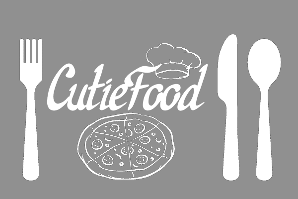

<ng-template #content let-c="close" let-d="dismiss">
  <div class="modal-header" *ngIf="recipe">
    <h2 class="modal-title mb-0" id="modal-basic-title">{{ recipe.name }}</h2>
    <button
      type="button"
      class="close"
      aria-label="Close"
      (click)="d('Cross click')"
    >
      <span aria-hidden="true">&times;</span>
    </button>
  </div>
  <div class="modal-body">
    <div *ngIf="recipe.user" class="row">
      <div class="col-12">
        <p class="text-secondary">Feltöltő: {{ recipe.user.userName }}</p>
      </div>
    </div>
    <div class="food-details" *ngIf="recipe">
      <div class="w-100 d-flex justify-content-center my-2">
        
      </div>
      <div class="my-3">
        <h2>Hozzávalók:</h2>
        <ul *ngFor="let ingredient of recipe.ingredients">
          <li>{{ ingredient.quantity }} {{ ingredient.ingredient.name }}</li>
        </ul>
        <h2>Elkészítés:</h2>
        <p>{{ recipe.process }}</p>
      </div>
    </div>
  </div>
  <div
    class="modal-footer d-flex justify-content-center justify-content-lg-end"
  >
    <app-add-to-calendar-modal
      *ngIf="!isCalendarPage"
    ></app-add-to-calendar-modal>
    <button
      *ngIf="!isFavoritesPage"
      type="button"
      class="btn btn-outline-dark"
      (click)="addToFavourites()"
    >
      Kedvencekhez adás
    </button>
    <div *ngIf="isFavoritesPage">
      <button
        type="button"
        class="btn btn-danger"
        (click)="deleteFromFavourites()"
      >
        Eltávolítás a kedvencek közül
      </button>
    </div>
    <button
      type="button"
      class="btn btn-outline-dark"
      (click)="c('Save click')"
    >
      Bezárás
    </button>
  </div>
</ng-template>

<button
  *ngIf="!isCalendarPage"
  class="open-recipe mr-2 mb-2"
  (click)="open(content)"
>
  MEGNYITÁS
</button>

<app-event
  *ngIf="isCalendarPage"
  [recipe]="recipe"
  (click)="open(content)"
  style="cursor: pointer"
></app-event>
